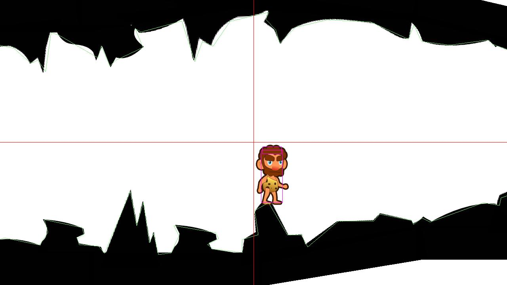

#1GAM February: weekly progress
Feb 10, 2013 · CommentsGames development
One week ago I posted about the initial game design for my February One Game A Month entry. I believe, it’s time to report back with the work I’ve done during the past seven days. Actually, I’ve realised how good an incentive is to leave written proof of what you intend to do in advance, forcing yourself to deliver just to avoid the public humiliation.
What I have so far
Without further ado, here’s the update.
- Started a GitHub repo.
- Integrated my codebase with some improvements across the board: engine facade, ID generator, i18n support, animated sprites, physics objects.
- Integrated the mapsapi libgdx branch to do some further testing on my Gleed system. Found a bug and already pull requested the fix.
- Component based entity system with an Artemis like API but fully compatible with the GWT backend. Nice thing is, it enforces garbage collector friendliness (through entity and component pooling). I”ll talk more about it on a different post.
- Static bodies creation from map’s shape data and material system. This might as well deserve another post, why the hell not!

Coming this week
I hereby make the compromise of delivering the following within a week.
- Spaceship entity with controls.
- Camera movement behavior.
- Collision handlers for the spaceship.
- Foreground shapes set.
Let’s leave it at that and stay realistic.
And now for something completely different
I’ve deleted my SionEngine repository from GitHub as I don’t feel it meets the appropriate quality standards just yet. I will surely continue developing its components along every One Game a Month project, which, as you can see, will be open source too. I never pretended it to be a killer engine of any sort, this is just my codebase and a way of developing my software design skills.
See you guys next week.